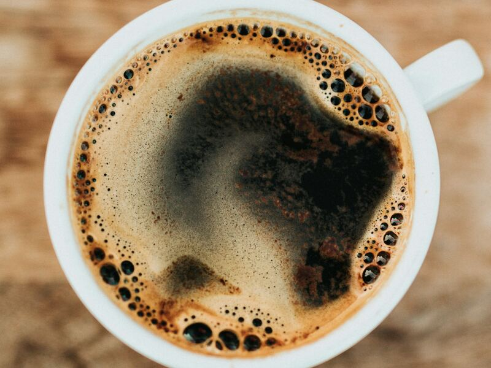
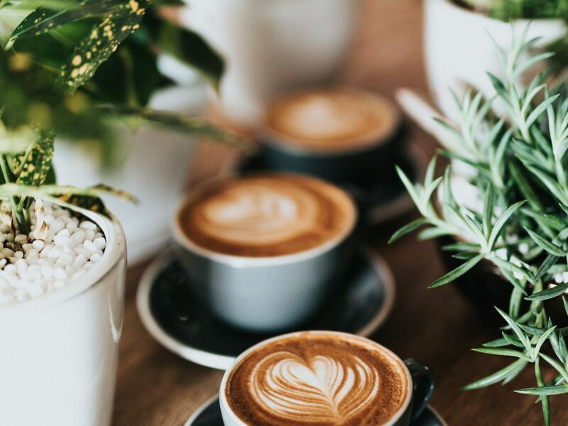
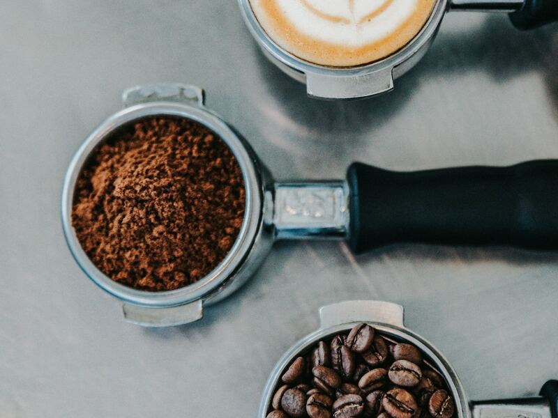

Vítejte v coffeeBase
coffeeBase je otevřená databáze výběrových (specialty) káv z lokálních českých pražíren. Na jednom místě porovnáte původ, zpracování, chuťové tóny i cenu – a najdete kávu přesně podle svého gusta.
Výběrová káva je zrno, které při hodnocení podle metodiky SCA (Specialty Coffee Association) získá alespoň 80 bodů ze 100. Za každým takovým balíčkem stojí konkrétní farma, pečlivé zpracování a pražič, který z něj umí dostat to nejlepší.
Jak coffeeBase funguje
1. Hledejte
Filtrujte kávy podle země, zpracování, profilu pražení nebo ceny. Tabulku lze řadit i prohledávat.
2. Vyberte
U každé kávy najdete chuťové tóny, odrůdu, nadmořskou výšku i doporučení pro přípravu.
3. Sdílejte
Ochutnali jste něco, co v databázi chybí? Přidejte kávu přes formulář a rozšiřte komunitu.

Panama Boquete Gesha
Kafemlýn, Plzeň
Legendární odrůda Gesha z panamského Boquete. Mimořádně květinový a elegantní šálek, který právem patří mezi nejvýše hodnocené kávy světa.
Tipy redakce
Všechny kávy
Etiopie Guji Hambela
Pražírna Vltava · Praha
Sladká přírodní Etiopie plná lesního ovoce s dlouhou čokoládovou dochutí.

Brazílie Cerrado Mineiro
Pražírna Pod Hradem · Český Krumlov
Sladká a nízce kyselá Brazílie, ideální základ pro espresso i cappuccino.
Keňa Nyeri Gatomboya
Severka Coffee · Liberec
Šťavnatá kyselinka černého rybízu a plné tělo, které dělají z Keni oblíbence baristů.
Novinky z pražíren
Jednou měsíčně pošleme přehled nových káv a sezónních novinek. Žádný spam.